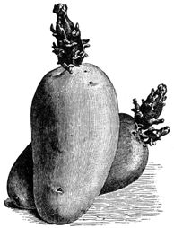
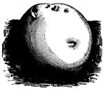
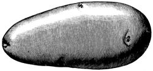
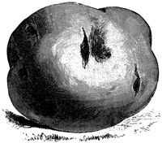
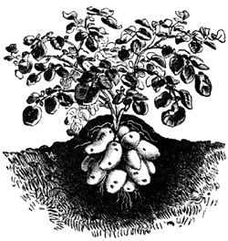

Wednesday, February the 1st, 2006
back to: title, date or indexes
Episode eight in our not-quite-daily serialisation of The Immense Duckpond Pamphlet, today with added potato pictures for your instruction and delight

In ancient Rome, the haruspices were an order of priests who made prophecies by examining the steaming entrails of sacrificially-slaughtered animals. Doctor Cack had made a thorough study of their methods, and for the last ten years had been engaged in experiments to carry out successful haruspication using mashed potatoes instead of entrails.
Ably assisted by Ruhugu and others, Doctor Cack would lay out the “field”, a triangular cloth weighted down at each corner by a small piece of bakelite. On to this, a precisely-measured amount of mashed potato would be splattered with the agency of an iron spatula. A second triangular cloth would be placed atop the resulting mess, and pressed down evenly. The upper cloth would then be turned over, and the pattern created by the mashed potato which had adhered to it would be examined with great care. Ruhugu used his box camera to make a photographic record.

Divination completed, and notes and annotations pencilled into the foolscap ledger, the cloth triangles would be scrubbed clean with a special detergent in readiness for the next experiment.

There were arguments, of course. Moop insisted that only certain potato varieties were sufficiently “numinous”, as she put it. Maris Pipers, Majestics, and Arran Banners met with her approval. Trellis maintained that the waxy texture of the Red Craig's Royal made it the only suitable variety. Strob said the cloths ought to be hexagonal. The unhinged Jubble went so far as to suggest using boiled and mashed celery instead.

Ruhugu mediated between the factions, protecting Doctor Cack from turmoil and strife, leaving him free to pore over the foolscap ledger, frowning, rapt, determined to eke from it whatever revelations it harboured.
